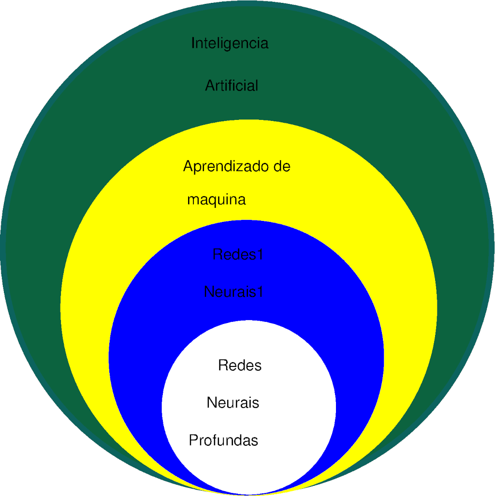
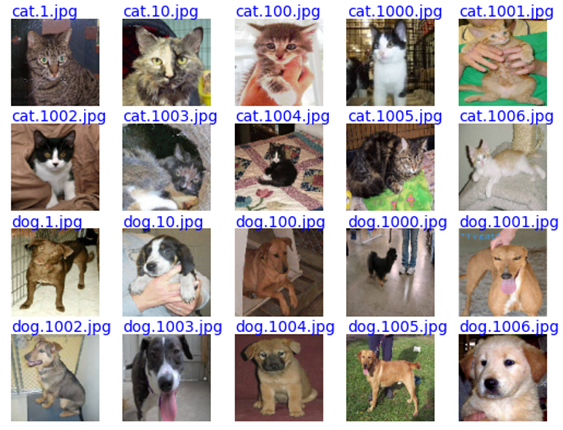
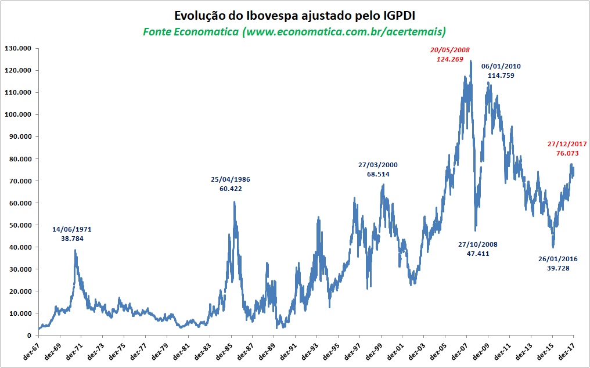

Introdução
Conteúdo
Introdução¶
O Aprendizado de Máquina (Machine Learning) surgiu dentro de um campo da Ciência da Computação conhecido como Inteligência Artificial (IA). O objetivo da IA é tornar máquinas inteligentes, capazes de “pensar racionalmente como humanos” e resolver problemas. Já o aprendizado de máquina busca criar sistemas computacionais e algoritmos para possibilitar máquinas a “aprender” a partir de uma experiência prévia. Como a inteligência e o aprendizado andam juntos, o aprendizado de máquina tem um papel dominante em IA. Uma máquina aprende quando ela é capaz de acumular experiência (por meio de dados, programas, etc.) e desenvolver novo conhecimento de modo a fazer com que seu desempenho em tarefas específicas melhore com o tempo. A ideia de aprender a partir da experiência é central em vários problemas de aprendizado de máquina como os de classificação, cujo objetivo é encontrar uma forma sistemática de classificar um exemplo novo.
As redes neurais, também chamadas de redes neurais artificiais, fazem parte de um subconjunto de técnicas de aprendizado de máquina. Na literatura, o termo “aprendizado de máquina” é muitas vezes confundido com o termo “aprendizado profundo” (deep learning). No entanto, uma rede neural só é considerada profunda se tiver duas ou mais camadas ocultas, conceito que será abordado posteriormente. Pode-se dizer que a maioria das redes neurais usadas na prática considera atualmente o aprendizado profundo. Na Fig. 1, fica claro que as redes neurais profundas são um subconjunto das redes neurais, que por sua vez são um subconjunto de técnicas de aprendizado de máquina. Todas as técnicas de aprendizado de máquina fazem parte do campo de IA.
{kind=link}

Fig. 1 Diagrama indicando o subcampo das redes neurais profundas dentro da IA.¶
Desde o surgimento dos computadores, os cientistas têm buscado maneiras de permitir que as máquinas produzam uma saída desejada a partir de entradas para tarefas como classificação e regressão. As redes neurais são sistemas não lineares que podem ser usados para essas tarefas. Elas surgiram na década de 1940, mas o algoritmo utilizado no seu treinamento, chamado de algoritmo de retropropagação (backpropagation), foi proposto apenas em 1986. Nas décadas de 1990 e 2000, muitos problemas foram observados no treinamento das redes neurais, que dificultavam sua capacidade de generalização e sua utilização em problemas práticos. No entanto, na década de 2010 diferentes abordagens foram propostas para melhorar seu treinamento, incluindo o treinamento das redes profundas. Essas abordagens fizeram com que as redes passassem a ganhar competições em diferentes problemas de classificação e regressão. Desde então, as redes neurais estão em ascensão devido à sua habilidade de resolver problemas anteriormente considerados insolúveis. Atualmente, elas têm sido consideradas em diferentes áreas como carros autônomos, cálculo de risco, detecção de fraude, detecção precoce de câncer, classificação de arritmias cardíacas, classificação de mosquitos, entre muitos outros.
O aprendizado de máquina pode ser classificado em dois tipos: supervisionado e não supervisionado. No caso supervisionado, existem dados rotulados que são usados no treinamento. Por exemplo, suponha que desejamos classificar o tipo de arritmia cardíaca. Nesse tipo de aplicação, é comum considerar o aprendizado supervisionado: existem bancos de dados com sinais de eletrocardiograma (ECG), cujas arritmias foram analisadas e classificadas a priori por um grupo de especialistas. Parte desses sinais é utilizada no treinamento: para cada batimento cardíaco a saída da máquina é comparada com a classificação conhecida. A comparação entre a saída e a classificação desejada é usada para ajustar os parâmetros da máquina a fim de minimizar uma função dessa diferença. Parte dos dados que não foi utilizada no treinamento é reservada para o teste. Neste caso, os parâmetros da máquina são mantidos fixos para verificar se a máquina tem uma boa capacidade de generalização. Em outras palavras, verifica-se se a máquina treinada é capaz de classificar dados que não foram utilizados no treinamento, possibilitando medir a acurácia que se obtém nessa classificação. No aprendizado não supervisionado, a máquina deve ser capaz de ajustar seus parâmetros sem utilizar dados com a classificação ou regressão desejada, ou seja, os rótulos não são conhecidos. Esse tipo de aprendizado é adequado para problemas que exigem que a máquina identifique e extraia semelhanças entre as entradas para que entradas semelhantes possam ser categorizadas juntas. Os dois tipos fundamentais de métodos de aprendizado não supervisionado são o agrupamento e a estimativa de densidade. O primeiro, que é o mais utilizado na prática, envolve problemas em que se necessita agrupar os dados em categorias específicas conhecidas como clusters, enquanto o último envolve estimar a distribuição estatística dos dados. Alguns exemplos de algoritmos de aprendizado de máquina não supervisionado incluem \(k\)-means, análise de componentes principais e clusterização hierárquica.
A seguir vamos abordar os dois tipos de problema que as redes neurais são capazes de resolver: classificação e regressão.
Aproximação de funções¶
A modelagem preditiva consiste em desenvolver um modelo usando dados históricos para fazer uma previsão sobre novos dados para os quais não temos resposta. Ela pode ser descrita pelo problema matemático de aproximar uma função de mapeamento de variáveis de entrada para variáveis de saída, que é chamado de aproximação de funções. O trabalho do algoritmo de modelagem é encontrar a melhor função de mapeamento possível, considerando o tempo e os recursos disponíveis. Podemos dividir a aproximação de funções em problemas de classificação ou de regressão.
Classificação¶
A modelagem preditiva de classificação é a tarefa de aproximar uma função de mapeamento de variáveis de entrada para variáveis de saída discretas. As variáveis de saída são frequentemente chamadas de rótulos ou categorias. A função de mapeamento prevê a classe ou categoria para uma determinada observação. Por exemplo, um e-mail de texto pode ser classificado como pertencente a uma das duas classes: “spam” e “não spam”.
Algumas observações sobre o problema de classificação:
Um problema de classificação requer que os exemplos sejam classificados em uma de duas ou mais classes;
Uma classificação pode ter variáveis de entrada discretas ou contínuas. Variáveis contínuas são aquelas que assumem qualquer valor em um intervalo da reta real, e.g. qualquer valor real do intervalo \([-1,\; 1]\).
Um problema com duas classes é frequentemente chamado de problema de classificação binária;
Um problema com mais de duas classes é frequentemente chamado de problema de classificação multiclasse;
Um problema em que um exemplo é atribuído a várias classes é chamado de problema de classificação multirrótulo.
É comum que os modelos de classificação prevejam um valor contínuo como a probabilidade de um dado exemplo pertencer a cada classe de saída. Uma probabilidade prevista pode ser convertida em um valor de classe selecionando o rótulo da classe que tem a probabilidade mais alta. Por exemplo, um e-mail específico de texto pode receber as probabilidades de \(0,1\) de ser “spam” e \(0,9\) de ser “não spam”. Podemos converter essas probabilidades em um rótulo de classe selecionando o rótulo “não spam”, pois ele tem a maior probabilidade prevista.
Existem muitas maneiras de estimar a habilidade do classificador, sendo a mais comum calcular a acurácia da classificação. A acurácia da classificação é a porcentagem de exemplos classificados corretamente de todas as previsões feitas. Por exemplo, se um modelo preditivo de classificação fizer 5 previsões e 3 delas estiverem corretas e 2 incorretas, a acurácia da classificação do modelo com base apenas nessas previsões seria \((3/5)\times 100= 60\%\).
Como exemplo de problema de classificação, considere as 20 imagens da Fig. 2. Observe que cada imagem contém a foto de um gato ou de um cachorro. Pode-se usar uma técnica de aprendizado de máquina para classificar cada uma dessas imagens entre as duas classes possíveis: gato ou cachorro. Esse problema de classificação binária será abordado em um exercício da disciplina “PSI3472 - Concepção e implementação de Sistemas Eletrônicos Inteligentes”.
{kind=link}

Fig. 2 Imagens de gatos e cachorros.¶
Regressão¶
A modelagem preditiva de regressão é a tarefa de aproximar uma função de mapeamento de variáveis de entrada para variáveis de saída contínuas. Por exemplo, pode-se prever que um apartamento seja vendido por um valor específico em reais, talvez na faixa de R$\(500.000\).
Algumas observações sobre o problema de regressão:
Um problema de regressão requer a previsão de uma quantidade;
Uma regressão pode ter variáveis de entrada discretas ou contínuas;
Um problema com múltiplas variáveis de entrada é frequentemente chamado de problema de regressão multivariada;
Um problema de regressão em que as variáveis de entrada são ordenadas por tempo é chamado de problema de previsão de séries temporais.
Como o modelo preditivo de regressão prevê uma quantidade, a habilidade do modelo deve ser descrita pelo erro de predição calculado como a diferença entre a previsão do regressor e o valor desejado. Existem muitas maneiras de estimar a habilidade do regressor, sendo a mais comum calcular a raiz quadrada do erro quadrático médio (root mean squared error - RMSE), que tem a mesma unidade do valor predito. Por exemplo, se um modelo preditivo de regressão fez 2 previsões, uma de 1,5 em que o valor esperado é 1,0 e outra de 3,3 em que o valor esperado é 3,0, então o RMSE seria
Como exemplo de problema de regressão, considere a evolução do índice Bovespa (Ibovespa) de dezembro de 1967 a dezembro de 2017 mostrado na Fig. 3. O Ibovespa é o indicador de desempenho mais importante das ações negociadas na B3 e reúne as empresas mais importantes do mercado de capitais brasileiro. Suponha que se deseja usar uma técnica de aprendizado de máquina para prever o valor desse índice no ano seguinte, ou seja de janeiro a dezembro de 2018. Para isso, pode-se considerar os dados sequenciais desde dezembro de 1967 e usar os dados do ano seguinte como resposta desejada. Assim, no treinamento pode-se considerar, por exemplo, os dados de 1968 para prever os dados de 1969 e assim por diante. O valor do índice a ser previsto é qualquer valor contínuo no intervalo \([0,\; 131.000]\) já que em 2018 esse índice não tinha atingido seu recorde nominal histórico que ocorreu em 07/06/2021, fechando em 130.776 pontos.
{kind=link}

Fig. 3 Evolução do Ibovespa de dezembro de 1967 a dezembro de 2017.¶